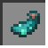
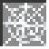
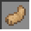
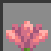
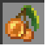

Hay Golem
Farmer
The Hay Golem is the farmer. It harvests ripe crops from soil you have tilled and sows the next generation, carrying the harvest to its Hay Chest one stack at a time.
Building a Hay Golem
Place the golem's body block, then put a carved pumpkin or jack o'lantern on top. The pumpkin is consumed, the body block becomes the golem's chest, and the golem stands on it. You do not need a chest first: the pattern makes one. The golem is bound to that chest and starts dormant.
The chest is also craftable, so you can move or replace it:


Waking it up
A golem starts dormant: head hanging, standing still, holding out the thing it wants in its off hand. Right-click it with that item to give it an offering. Each offering is worth 45 minutes of work and it stores at most two (90 minutes). It then asks for something different, so no single item will do. The clock runs only while the golem is loaded and has a job site.
These are the items it can ask for. They are deliberately unrelated to its job, so keeping a large operation going means going out exploring.
 Slimeballslimes
Slimeballslimes
Glow Ink Sacglow squid Pufferfishwarm oceans
Pufferfishwarm oceans
Cobwebmineshafts
Rabbit's Footrabbits
Cactus Flowercacti Pointed Dripstonedripstone caves
Pointed Dripstonedripstone caves
Glow Berrieslush caves
What it does
- It works the tilled farmland within 10 blocks of its chest (and two blocks up and down). It never tills soil itself: you prepare the plots and plant the first generation.
- It walks onto a ripe crop and breaks it, then onto the bare farmland to sow whatever seeds it is holding. It will not sow things that are not seeds.
- It is deliberately slow: it plods about at well under the pace of the other golems.
- Seeds come from the chest. When it runs out it waits, so keep some seeds in the Hay Chest.
Like every golem it carries one stack at a time: it has no inventory, picks things up in its hand, takes them to its chest and goes back for the next. Supplies come out of the chest the same way.
It produces


It uses
 SeedsSeeds, carrots, potatoes and the other plantable crops
SeedsSeeds, carrots, potatoes and the other plantable crops
Notes
- Hoppers and water streams work fine around it: it only ever picks up the crops it works with.
- The vanilla composter still counts as its job site if you have no Hay Chest.
- The chest has 27 slots and never joins into a double chest. A golem prefers its own chest to any other nearby.